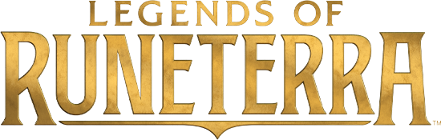

Deskripsi Singkat
Riot Games, Inc. adalah sebuah badan penyelenggara
turnamen olahraga elektronik, pengembang permainan video dan
penerbit permainan video Amerika Serikat yang berbasis di Los
Angeles bagian barat, California. Perusahaan tersebut dibentuk pada
September 2006 untuk mengembangkan League of Legends, sebuah
permainan arena pertempuran online dengan pemain yang banyak. Sejak
dirilis pada 2009, perusahaan telah menghasilkan beberapa produk
terkenal dalam waralaba yang sama. Untuk gim, Riot Games
mengoperasikan 14 liga esports internasional, dan League of Legends
World Championship. Per Mei 2018, Riot Games memiliki 24 kantor di
seluruh dunia dan mempekerjakan sekitar 2.500 staf. Sejak 2011, Riot
telah menjadi anak perusahaan konglomerat Tiongkok Tencent.
Sejarah
Penemu dari Riot Games, Brandon “Ryze” Beck dan Marc “Tryndamere”
Merrill menjadi teman ketika menjadi teman sekamar di University of
Southern California, dimana keduanya mempelajari bisnis dan memiliki
ketertarikan pada video game.Beck dan Merrill mempercayai bahwa
teralu banyak pengembang video game yang melompat dari satu game ke
game yang lain teralu cepat, dan memikirkan tentang video game yang
berjudul Defense of the Ancients yang membuktikan bahwa video game
dapat didukung dan dimonetisasi dalam jangka panjang.Mereka juga
mendapat inspirasi dari perancang video game Asia yang mengenakan
biaya untuk keuntungan tambahan. Beck dan Merrill mencari dana lewat
keluarga dan investor malaikat, lalu berhasil mengumpulkan dana
sebesar 1.5 juta dolar AS untuk meluncurkan perusahaan mereka.Riot
Games didirikan pada September 2006 dan membuka sebuah kantor di
sebuah toko mesin tua di bawah sebuah jembatan bernama Interstate
405 di Santa Monica, California.Orang pertama yang direkrut oleh
Riot Games adalah Steve “Guinsoo” Feak, salah satu pengempang awal
dari DotA Allstars, sebuah permainan yang dianggap sebagai fondasi
dari aliran MOBA.Saat mereka menyempurnakan pembuatan awal League of
Legends, mereka menawarkan para investor sebuah perusahaan video
game yang berakar pada e-commerce. Merrill mengatakan bahwa mereka
mendekati para penerbit yang bingung dengan kurangnya mode
single-player dan model bisnis free-to-play.Setelah beberapa putaran
pendanaan berjumlah 8 juta dolar AS, termasuk investasi oleh firma
modal ventura Benchmark dan FirstMark Capital, serta perusahaan
induk asal Tiongkok, Tencent, yang kemudian menjadi distributor dari
League of Legends di Tiongkok.
E-sport
Riot Games mengoperasikan liga esports di seluruh dunia. Ini
termasuk Seri Kejuaraan League of Legends, yang terdiri dari
liga-liga di Amerika Utara dan Eropa. Secara total, ada lebih dari
100 tim di 14 liga regional Riot Games di seluruh dunia. Tim
bersaing selama satu musim yang dipisahkan menjadi dua pemisahan
musiman. Tim mendapatkan poin kejuaraan untuk lolos ke dua kompetisi
internasional utama: Mid-season invitational dan League of Legends
World Championship. League of Legends World Championship dari Riot
games adalah turnamen profesional tahunan di akhir setiap musim.
Selama tahun 2010 dan 2011, tim Riot Games mengembangkan konten baru
untuk League of Legends;pada saat itulah perusahaan menyadari bahwa
orang-orang juga suka menonton permainan yang dimainkan.Hasilnya,
Riot Games mendirikan liga esports League of Legends yang
memproduksi siaran mingguan dan membuat jadwal permainan
profesional.Menyusul acara kejuaraan dunia pertama Riot Games pada
tahun 2011, diadakan sebuah pertemuan kecil di sebuah konferensi di
Swedia, perusahaan memutuskan untuk mengubah turnamen mereka menjadi
acara seperti olahraga profesional.Riot berinvestasi dalam peralatan
penyiaran, menyewa produser program olahraga, dan melatih pemain pro
agar "siap untuk TV".Pada tahun 2012, Riot Games mengadakan
turnamennya di Pusat Galen Universitas California Selatan,
menawarkan hadiah uang US$1 juta.Riot Games telah mengadakan
turnamen di Berlin, Seoul, Madison Square Garden di New York City,
dan Staples Center di Los Angeles.Perusahaan menjual sponsor
perusahaan, merchandise, dan hak streaming untuk liga
esports-nya.Pada 2015, investor membeli saham dalam tim dan mulai
membangun regu mereka sendiri.Di antara pemilik tim di liga Riot
Games juga merupakan pemilik Washington Wizards, Cleveland
Cavaliers, Houston Rockets, Golden State Warriors, Philadelphia
76ers, Los Angeles Dodgers, co-founder AOL Steve Case, dan life
coach Tony Robbins. ''Inc.'' mengutip pertumbuhan liga dan
kepemilikan profil tinggi sebagai bagian dari alasannya menjadikan
Riot Games sebagai Perusahaan Terbaik Tahun 2016.Menyusul perdebatan
mengenai apakah pemain dan pelatih pro harus memiliki bagian yang
lebih besar dari pendapatan esports Riot Games dan kekhawatiran yang
muncul tentang perusahaan yang membuat perubahan dalam game sebelum
pertandingan, perusahaan mengeluarkan surat terbuka pada tahun 2016
yang menjanjikan pembagian pendapatan yang lebih tinggi dan lebih
banyak kolaborasi dengan tim profesional.Pada 2017, Riot Games
mengadakan League of Legends World Championship di Cina, dengan
finalnya berlangsung di Beijing. Pada tahun yang sama, perusahaan
mengumumkan akan mewaralabakan sepuluh tim North American League of
Legends Championship Series, yang menelan biaya setidaknya US $ 10
juta untuk masuk. US$10 million to enter. Pandemi covid-19 melanda
dunia, membuat gelaran League of Legends World Championship atau
Worlds 2020 diadakan dengan sistem gelembung dan tanpa penonton
langsung di Cina. Gelaran Worlds 2020 ini juga mendapatkan
penghargaan sebagai Best Esports Event dari ajang The Game Awards
2020. Selain itu, Worlds 2020 mencatatkan rekor sebanyak satu miliar
jam ditonton oleh sebanyak 23,04 juta orang per menit.uh rujukan]
Pada gelaran Worlds 2021, Kota Shenzhen (Cina) terpilih menjadi tuan
rumah Kejuaraan Dunia League of Legends. Riot Games melarang
ekspresi pandangan pribadi tentang apa yang dianggapnya sebagai
masalah sensitif (termasuk politik dan agama) selama siaran langsung
acara esports.
Rilisan Game
Teamfight Tactics

2019
Legends of Runeterra

2020
Valorant

2020
League of Legends: Wild Rift

2020